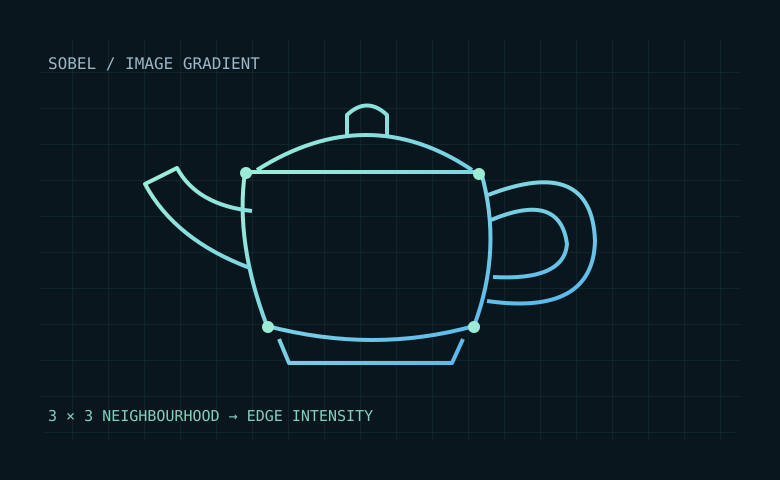

OFFICIAL NVIDIA KERNELNVIDIA Sobel shared tile
Run the shared-memory version of Sobel edge detection. CUDA lanes load a pixel tile together and write four packed output pixels per record.
1024² grayscale image4 native image comparisonsOriginal shared kernel